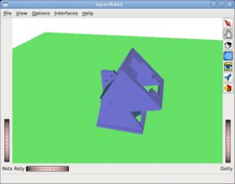
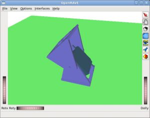
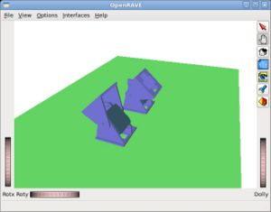
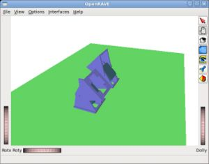
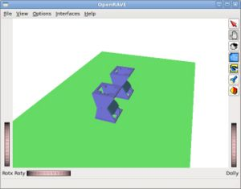
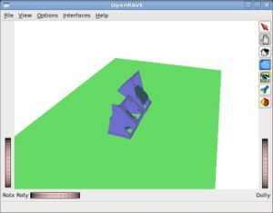
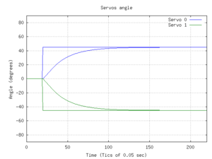

Example of the setpos1 command to set the position of the servo 0. The module's angle is set to 45 and -45 degrees alternatively.
|  Test-servocontroller-1: Servo position set to -45 degrees (click to enlarge) |
 Test-servocontroller-1: Servo position set to 45 degrees (click to enlarge) |
In the begining the environmnet is created (loaded from the file models/Unimod1.env.xml) and the camera view is set. The environment consist of one robot with only one module (Unimod).
First the pointer to the robot(probot) is obtained from the environment (penv). In a general scence, there can be multiple robots. But in this example there is only one robot (robot number 0):
std::vector<RobotBasePtr> robots; penv->GetRobots(robots); RobotBasePtr probot = robots[0];
Then the servocontroller is set as the robot controller:
ControllerBasePtr pcontroller = penv->CreateController("servocontroller");
probot->SetController(pcontroller,"");
In the main loop, the serpos1 command is used to set the module's angle:
while(1) {
is << "setpos1 0 45 ";
pcontroller->SendCommand(os,is);
sleep(1);
is << "setpos1 0 -45 ";
pcontroller->SendCommand(os,is);
sleep(1);
}
Example of the setpos and setpos1 commands to set the position of two servos. Both modul angles are set to 45 and -45 degrees alternatively.
|  Test-servocontroller-2: Servo positions set to 45 and -45 degrees (click to enlarge) |
 Test-servocontroller-2: Servo positions set to -45 and 45 degrees (click to enlarge) |
In the main loop, the position of the servos is set to 45 and -45 degrees using the setpos command.
is << "setpos 45 -45 "; pcontroller->SendCommand(os,is); sleep(1);
Then, the position is set to -45 and 45 but using the setpos1 command (it can also be used the setpos command, of course)
is << "setpos1 0 -45 "; pcontroller->SendCommand(os,is); is << "setpos1 1 45 "; pcontroller->SendCommand(os,is); sleep(1);
Example of the record command. The two servos are set to -45 and 45 respectivelly. The servo's angle at every simulation tic are stored into the test1.m file.
|  Test-servocontroller-3: Initial Servo positions (click to enlarge) |
 Test-servocontroller-3: Final Servo positions (click to enlarge) |
Initially, the two servos are both set to 0 degrees:
is << "setpos 0 0 "; pcontroller->SendCommand(os,is); sleep(1);
Then the record on command is executed. The file test1.m is specified as the output. The simulation waits for 100ms:
is << "record_on test1.m "; pcontroller->SendCommand(os,is); usleep(100000);

After that, the servos are set to 45 and -45 degrees respectivelly for 1 sec
is << "setpos 45 -45 "; pcontroller->SendCommand(os,is); sleep(1);
Finally, the record off command is executed
is << "record_off "; pcontroller->SendCommand(os,is);
The file test1.m is created. It is an octave/Matlab file that store all the servo's angle of the two servos:
octave test1.m
When this file is executed with octavce, the plot shown in the right is displayed. It contains the reference positions and the servo's angle during time. The reference positions change from 0 to 45 and -45 after 100ms. Then the servo's angle star to change util they reach the reference positions